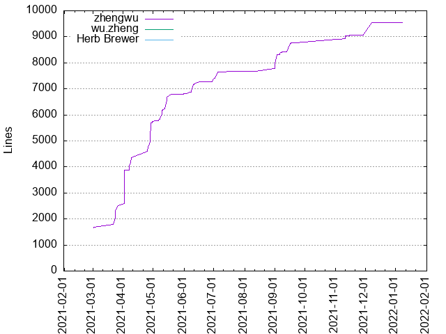
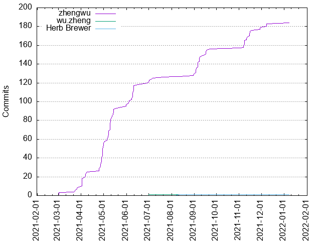

Authors
| Author | Commits (%) | + lines | - lines | First commit | Last commit | Age | Active days | # by commits |
|---|
| zhengwu | 184 (98.92%) | 9539 | 6923 | 2021-03-02 | 2022-01-07 | 311 days, 7:53:05 | 70 | 1 |
| wu.zheng | 1 (0.54%) | 0 | 0 | 2021-07-01 | 2021-07-01 | 0:00:00 | 1 | 2 |
| Herb Brewer | 1 (0.54%) | 0 | 3 | 2021-08-12 | 2021-08-12 | 0:00:00 | 1 | 3 |


| Month | Author | Commits (%) | Next top 5 | Number of authors |
|---|
| 2022-01 | zhengwu | 1 (100.00% of 1) | | 1 |
| 2021-12 | zhengwu | 4 (100.00% of 4) | | 1 |
| 2021-11 | zhengwu | 23 (100.00% of 23) | | 1 |
| 2021-09 | zhengwu | 28 (100.00% of 28) | | 1 |
| 2021-08 | zhengwu | 2 (66.67% of 3) | Herb Brewer | 2 |
| 2021-07 | zhengwu | 6 (85.71% of 7) | wu.zheng | 2 |
| 2021-06 | zhengwu | 26 (100.00% of 26) | | 1 |
| 2021-05 | zhengwu | 42 (100.00% of 42) | | 1 |
| 2021-04 | zhengwu | 43 (100.00% of 43) | | 1 |
| 2021-03 | zhengwu | 9 (100.00% of 9) | | 1 |
| Year | Author | Commits (%) | Next top 5 | Number of authors |
|---|
| 2022 | zhengwu | 1 (100.00% of 1) | | 1 |
| 2021 | zhengwu | 183 (98.92% of 185) | wu.zheng, Herb Brewer | 3 |
| Domains | Total (%) |
|---|
| midday.me | 184 (98.92%) |
|---|
| adtalos.com | 1 (0.54%) |
|---|
| 4leaf.me | 1 (0.54%) |
|---|